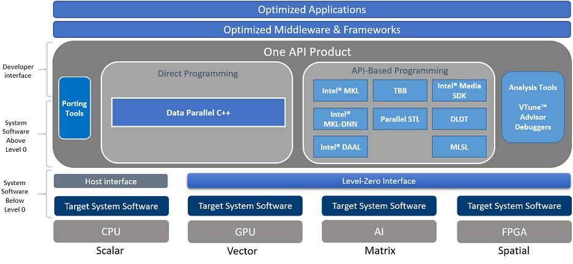
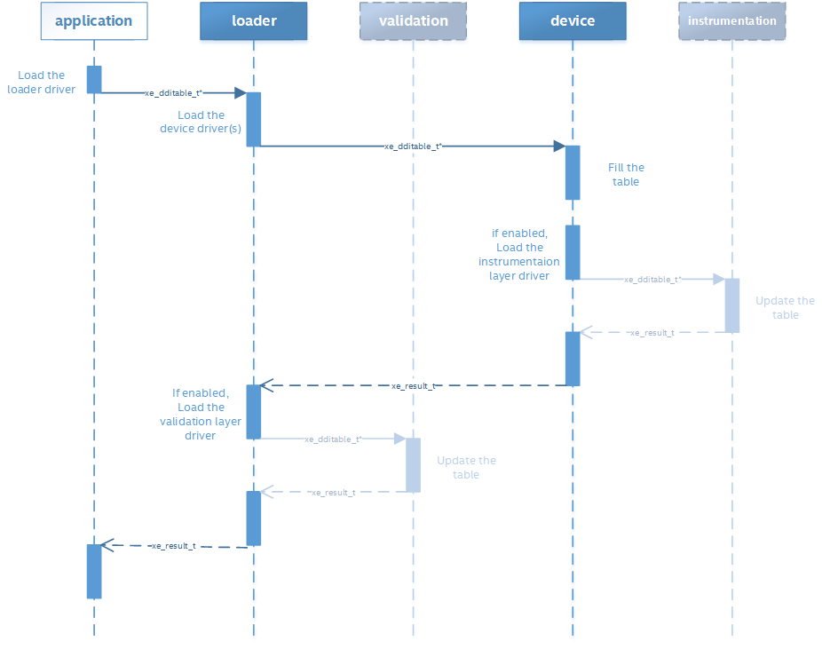

Overview¶
Objective¶
The objective of the ‘One API’ Level-Zero API is to provide direct-to-metal interfaces to offload accelerator devices. It is a programming interface that can be published at a cadence that better matches Intel hardware releases and can be tailored to any device needs. It can be adapted to support broader set of languages features, such as function pointers, virtual functions, unified memory, and I/O capabilities.
The Level-Zero API provides the lowest-level, fine-grain and most explicit control over:
Device Discovery
Memory Allocation
Peer-to-Peer Communication
Inter-Process Sharing
Kernel Submission
Asynchronous Execution and Scheduling
Synchronization Primitives
Metrics Reporting
System Management Interface
Most applications should not require the additional control provided by the Level-Zero API. The Level-Zero API is intended for providing explicit controls needed by higher-level runtime APIs and libraries.
While initially influenced by other low-level APIs, such as OpenCL and Vulkan, the Level-Zero APIs are designed to evolve independently. While initially influenced by GPU architecture, the Level-Zero APIs are designed to be supportable across different compute device architectures, such as FPGAs, CSAs, etc.
Devices¶
The API architecture exposes both physical and logical abstraction of the underlying devices capabilities. The device, sub device and memory are exposed at physical level while command queues, events and synchronization methods are defined as logical entities. All logical entities will be bound to device level physical capabilities.
Device discovery APIs enumerate the accelerators functional features. These APIs provide interface to query information like compute unit count within the device or sub device, available memory and affinity to the compute, user managed cache size and work submission command queues.
Memory & Caches¶
Memory is visible to the upper-level software stack as unified memory with a single virtual address space covering both the Host and a specific device.
For GPUs, the API exposes two levels of the device memory hierarchy:
Local Device Memory: can be managed at the device and/or sub device level.
Device Cache(s):
Last Level Cache (L3) can be controlled through memory allocation APIs.
Low Level Cache (L1) can be controlled through program language intrinsics.
The API allows allocation of buffers and images at device and sub device granularity with full cacheablity hints.
Buffers are transparent memory accessed through virtual address pointers
Images are opaque objects accessed through handles
The memory APIs provide allocation methods to allocate either device, host or shared memory. The APIs enable both implicit and explicit management of the resources by the application or runtimes. The interface also provides query capabilities for all memory objects.
Subdevice Support¶
The API supports sub-devices and there are functions to query and obtain a sub-device. A sub-device can represent a physical or logical partition of the device. Outside of these functions there are no distinction between sub-devices and devices. For example, a sub-device can be used with memory allocation and tasks and allow placement and submission to a specific sub-device.
Peer-to-Peer Communication¶
Peer to Peer API’s provide capabilities to marshall data across Host to Device, Device to Host and Device to Device. The data marshalling API can be scheduled as asynchronous operations or can be synchronized with kernel execution through command queues. Data coherency is maintained by the driver without any explicit involvement from the application.
Inter-Process Communication¶
The API allows sharing of memory objects across different device processes. Since each process has its own virtual address space, there is no guarantee that the same virtual address will be available when the memory object is shared in new process. There are a set of APIs that makes it easier to share the memory objects with ease.
System Management¶
The API provides in-band ability to query the performance, power and health of accelerator resources. It also enables controlling the performance and power profile of these resources. Finally, it provides access to maintenance facilities such as performing hardware diagnostics or updating firmware.
API Specification¶
The following section provides high-level design philosophy of the APIs. For more detailed information, refer to the programming guides and detailed specification pages.
Terminology¶
This specification uses key words based on RFC2119 to indicate requirement level. In particular, the following words are used to describe the actions of an implementation of this specification:
May - the word may, or the adjective optional, mean that conforming implementations are permitted to, but need not behave as described.
Should - the word should, or the adjective recommended, mean that there could be reasons for an implementations to deviate from the behavior described, but that such deviation should be avoided.
Must - the word must, or the term required or shall, mean that the behavior described is an absolute requirement of the specification.
Naming Convention¶
The following naming conventions are followed in order to avoid conflicts within the API, or with other APIs and libraries: - all driver entry points are prefixed with ze - all types follow **ze_<name>_t** convention - all macros and enumerator values use all caps **ZE_<SCOPE>_<NAME>** convention - all functions use camel case ze<Object><Action> convention - exception: since “driver” functions use implicit <Object>, it is omitted - all structure members and function parameters use camel case convention
In addition, the following coding standards are followed: - all function input parameters precede output parameters - all functions return ::ze_result_t
Versioning¶
There are multiple versions that should be used by the application to determine compatibility:
API Version - this is the version of the API supported by the device.
This is typically used to determine if the device supports the minimum set of APIs required by the application.
There is a single API version that represents a collection of APIs.
The value is determined from calling ::zeDriverGetApiVersion
The value returned will be the minimum of the ::ze_api_version_t supported by the device and known by the driver.
Structure Version - these are the versions of the structures passed-by-pointer to the driver.
These are typically used by the driver to support applications written to older versions of the API.
They are provided as the first member of every structure passed to the driver.
Driver Version - this is the version of the driver installed in the system.
This is typically used to mitigate driver implementation issues for a feature.
The value is determined from calling ::zeDriverGetProperties
Error Handling¶
The following design philosophies are adopted in order to reduce Host-side overhead:
By default, the driver implementation does no parameter validation of any kind
This can be enabled via environment variables, described below
By default, neither the driver nor device provide any protection against the following:
Invalid API programming
Invalid function arguments
Function infinite loops or recursions
Synchronization primitive deadlocks
Non-visible memory access by the Host or device
Non-resident memory access by the device
The driver implementation is not required to perform API validation of any kind
The driver should ensure well-behaved applications are not burdened with the overhead needed for non-behaving applications
Unless otherwise specified, the driver behavior is undefined when APIs are improperly used
For debug purposes, API validation can be enabled via the [Validation Layers](#v0)
All API functions return ::ze_result_t
This enumeration contains error codes for the core APIs and validation layers
This allows for a consistent pattern on the application side for catching errors; especially when validation layer(s) are enabled
Multithreading and Concurrency¶
The following design philosophies are adopted in order to maximize Host thread concurrency:
APIs are free-threaded when the driver object handle is different.
the driver should avoid thread-locks for these API calls
APIs are not thread-safe when the driver object handle is the same, except when explicitly noted.
the application is responsible for ensuring multiple threads do not enter an API when the handle is the same
APIs are not thread-safe with other APIs that use the same driver object handle
the application is responsible for ensuring multiple threads do not enter these APIs when the handle is the same
APIs do not support reference counting of handles.
the application is responsible for tracking ownership and explicitly freeing handles and memory
the application is responsible for ensuring that all driver objects and memory are no longer in-use by the device before freeing; otherwise the Host or device may fault
no implicit garabage collection is supported by the driver
In general, the API is designed to be free-threaded rather than thread-safe. This provides multithreaded applications with complete control over both threading and locks. This also eliminates unnecessary driver overhead for single threaded applications and/or very low latency usages.
The exception to this rule is that all memory allocation APIs are thread-safe since they allocate from a single global memory pool. If an application needs lock-free memory allocation, then it could allocate a per-thread pool and implement its own sub-allocator.
An application is in direct control over all Host thread creation and usage. The driver should never implicitly create threads. If there is a need for an implementation to use a background thread, then that thread should be create and provided by the application.
Each API function must document details on the multithreading requirements for that call.
The primary usage-models enabled by these rules is:
multiple, simultaneous threads may operate on independent driver objects with no implicit thread-locks
driver object handles may be passed between and used by multiple threads with no implicit thread-locks
Experimental API Support¶
Features which are still being considered for inclusion into the “Core” API, but require additional experimentation by application vendors before ratification, are exposed as “Experimental” APIs.
Applications should not rely on experimental APIs in production. - Experimental APIs may be added and removed from the API at any time; with or without an official API revision. - Experimental APIs are not guaranteed to be forward or backward compatible between API versions. - Experimental APIs are not guaranteed to be supported in production driver releases; and may appear and disappear from release to release.
An implementation will return ::ZE_RESULT_ERROR_UNSUPPORTED_FEATURE for any experimental API not supported by that driver.
Driver Architecture¶
The following section provides high-level driver architecture.

Library¶
A static import library shall be provided to allow applications to make direct API calls without understanding the underlying driver interfaces.
C/C++ applications may include “ze_api.h” and link with “ze_api.lib”.
Loader¶
The loader initiates the loading of the driver(s) and layer(s). The loader exports all API functions to the static library via per-process API function pointer table(s). Each driver and layer must below the loader will also export its API/DDI functions via per-process function pointer table(s). The export function and table definitions are defined in “ze_ddi.h”.
The loader is dynamically linked with the application using the “ze_loader.dll” (windows) or “ze_loader.so” (linux). The loader is vendor agnostic, but must be aware of the names of vendor-specific device driver names. (Note: these are currently hard-coded but a registration method will be adopted when multiple vendors are supported.)
The loader dynamically loads each vendor’s device driver(s) present in the system and queries each per-process function pointer table(s). If only one device driver needs to be loaded, then the loader layer may be entirely bypassed.
The following diagram illustrates the expected loading sequence:
Thus, the loader’s internal function pointer table entries may point to:
validation layer intercepts (if enabled),
instrumentation layer intercepts (if enabled),
device driver exports, + or any combination of the above
Device Drivers¶
The device driver(s) contain the device-specific implementations of the APIs.
The device driver(s) are dynamically linked using a ze_vendor_type.dll (windows) / ze_vendor_type.so (linux); where vendor and type are names chosen by the device vendor. For example, Intel GPUs use the name: “ze_intc_gpu”.
Validation Layer¶
The validation layer provides an optional capability for application developers to enable additional API validation while maintaining minimal driver implementation overhead.
works independent of driver implementation
works for production / release drivers
works independent of vendor or device type
checks for common application errors, such as parameter validation
provides common application debug tracking, such as object and memory lifetime
The validation layer must be enabled via an environment variable. Each capability is enabled by additional environment variables.
The validation layer supports the following capabilities:
Parameter Validation
checks function parameters, such as null pointer parameters, invalid enumerations, uninitialized structures, etc.
Handle Lifetime
tracks handle allocations, destruction and usage for leaks and invalid usage (e.g., destruction while still in-use by device)
Memory Tracker
tracks memory allocations and free for leaks and invalid usage (e.g., non-visible to device)
Threading Validation
checks multi-threading usage (e.g., functions are not called from simultaneous threads using the same handle)
Instrumentation Layer¶
The instrumentation layer provides an optional capability for application developers to enable additional profiling API while maintaining minimal driver implementation overhead.
works independent of driver implementation
works for production / release drivers
implements Tools APIs
The instrumentation layer must be enabled via an environment variable. Each capability is enabled by additional environment variables.
The instrumentation layer supports the following capabilities:
API Tracing
Enables API tracing and profiling APIs; more details in Tools programming guide
Program Instrumentation
Enables instrumentation of programs for profiling; more details in Tools programming guide
Environment Variables¶
The following table documents the supported knobs for overriding default driver behavior.
Category |
Name |
Values |
Description |
|---|---|---|---|
Device |
ZE_AFFINITY_MASK |
Hex String |
Forces driver to only report devices (and sub-devices) as specified by mask value |
Memory |
ZE_SHARED_FORCE_DEVICE_ALLOC |
{0, 1} |
Forces all shared allocations into device memory |
Validation |
ZE_ENABLE_VALIDATION_LAYER |
{0, 1} |
Enables validation layer for debugging |
ZE_ENABLE_PARAMETER_VALIDATION |
{0, 1} |
Enables the validation level for parameters |
|
ZE_ENABLE_HANDLE_LIFETIME |
{0, 1} |
Enables the validation level for tracking handle lifetime |
|
ZE_ENABLE_MEMORY_TRACKER |
{0, 1} |
Enables the validation level for tracking memory lifetime |
|
ZE_ENABLE_THREADING_VALIDATION |
{0, 1} |
Enables the validation level for multithreading usage |
|
Instrumentation |
ZE_ENABLE_INSTRUMENTATION_LAYER |
{0, 1} |
Enables validation layer for debugging |
ZE_ENABLE_API_TRACING |
{0, 1} |
Enables the instrumentation for API tracing |
|
ZE_ENABLE_METRICS |
{0, 1} |
Enables the instrumentation for device metrics |
|
ZE_ENABLE_PROGRAM_INSTRUMENTATION |
{0, 1} |
Enables the instrumentation for program instrumentation |
|
ZE_ENABLE_PROGRAM_DEBUGGING |
{0, 1} |
Enables the instrumentation for program debugging |
Affinity Mask¶
The affinity mask allows an application or tool to restrict which devices (and sub-devices) are visible to 3rd-party libraries or applications in another process, respectively. The affinity mask is specified via an environment variable as a string of hexadecimal values. The value is specific to system configuration; e.g., the number of devices and the number of sub-devices for each device. The following examples demonstrate proper usage:
“” (empty string) = disabled; i.e. all devices and sub-devices are reported. This is the default value.
Two devices, each with four sub-devices
“FF” = all devices and sub-devices are reported (same as default)
“0F” = only device 0 (with all its sub-devices) is reported
“F0” = only device 1 (with all its sub-devices) is reported as device 0’
“AA” = both device 0 and 1 are reported, however each only has two sub-devices reported as sub-device 0 and 1
Two devices, device 0 with one sub-device and device 1 with two sub-devices
“07” = all devices and sub-devices are reported (same as default) + “01” = only device 0 (with all its sub-devices) is reported
“06” = only device 1 (with all its sub-devices) is reported as device 0
“05” = both device 0 and device 1 are reported, however each only has one sub-device reported as sub-device 0
Tools¶
Level-Zero APIs specific for supporting 3rd-party tools are separated from “Core” into “Tools” APIs. The “Tools” APIs are designed to provided low-level access to device capabilities in order to support 3rd-party tools, but are not intended to replace or directly interface 3rd-party tools. The “Tools” APIs are still available for direct application use.
The following diagram illustrates how 3rd-party tools may utilize the instrumentation layer:

The “Tools” APIs provide the following capabilities for 3rd-party tools:
Allow for callbacks to be registered, in order to be notified of specific application events.
Allow for device metrics to be queried, in order to profile application usage.
Allow for application programs to be instrumented with custom instructions, for low-level code profiling.
Allow for application programs to be debugged using breakpoints and register access.
See the “Tools” programming guide for more details.
System Management¶
All global management of accelerator resources are separated from “Core” into the “Sysman” API.
The “Sysman” API provides in-band access to the following features for each accelerator device:
Query inventory information
Query information about host processes using the device
Change the accelerator workload scheduling policies
Query and control frequency/voltage/power
Query temperature sensors
Query load on various accelerator engines (overall, media, compute, copy)
Query device memory bandwidth and health
Query PCI bandwidth and health
Query high-speed Fabric bandwidth and health
Control the standby policy of the device
Query ECC/RAS status of various components on the device
Query power supply status
Control LEDs
Control fans
Perform overclocking/under-voltage changes where appropriate
Listen for events (temperature excursion, frequency throttling, RAS errors)
Flash firmware
Run diagnostics
Reset the device
By default, only administrator users have permissions to perform control operations on resources. Most queries are available to any user with the exception of those that could be used for side-channel attacks. The systems administrator can tighten/relax the default permissions.
See the “Sysman” programming guide for more details.